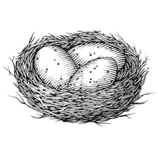
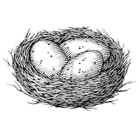

Among waterfowl, regular seasonal movements (i.e., migration) are driven by changing photoperiod, the relative length of day and night during a 24-hour period. As a result, migration is physiologically "hard-wired" in waterfowl and other migratory birds. Beginning in spring, increasing day length affects hormone response and starts the clock ticking. Accumulation of fat, migration, breeding, and the molt follow in succession over the next weeks and months. The prompt for fall migration is not as clear but is most likely related to the timing of reproductive events and molting. The result, however, is just as predictable. During a period of long days with gradually decreasing daylight, birds again accumulate fat reserves for migration and become restless—in a behavior known as zugunruhe—setting the stage for their departure south. Recent climate trends notwithstanding, general patterns of temperature and precipitation in North America have remained largely unchanged for millennia. Along with photoperiod, seasonal changes in habitat conditions account for the general timing of waterfowl migrations that have developed over thousands of years. Yet this is where the predictability of migration stops. Year to year, migratory departures are triggered by short-term changes in weather and habitat conditions. Fall weather affects habitat conditions and the availability of food needed for birds to store energy-rich fat reserves prior to migration and to replace these reserves following long-distance flights. Historically, annual plant seeds, aquatic plants, acorns, and other mast provided the food resources the birds needed for migration. On the contemporary landscape, however, agriculture plays a much more important role. In general, less food means more rapid transition and departure of ducks and geese.